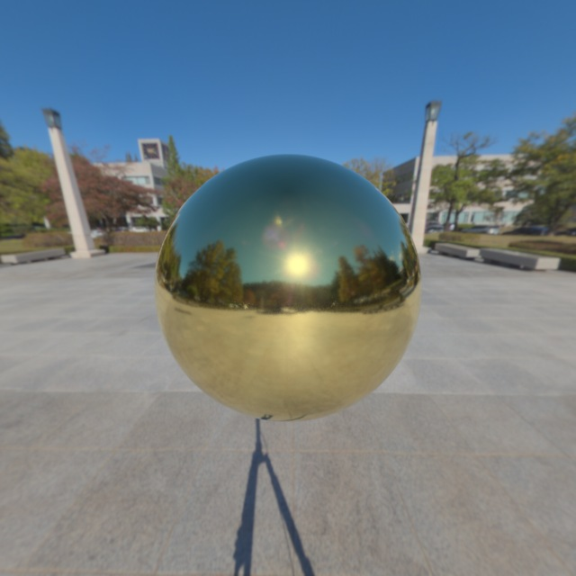

Polarization rendering in Mitsuba 3
Render scenes with our measured polarimetric environment maps in Mitsuba 3 using the custom penvmap emitter.



Polarized environment emitter (penvmap)
This emitter illuminates a scene from a Duff-basis RGB Stokes environment map. Pair it with a polarized RGB variant and a stokes integrator to record polarization at the camera.
| Parameter | Type | Description |
|---|---|---|
filename | string | Latitude–longitude EXR with four RGB layers (S0, S1, S2, and S3), such as those in penvmap/duff/. |
bitmap | Bitmap | Loaded mi.Bitmap passed from Python (used in place of filename). |
scale | float | Scalar multiplier applied to all four Stokes components. Defaults to 1. |
to_world | transform | World-space orientation transform for the environment. Defaults to the identity. |
mis_compensation | boolean | Multiple importance sampling (MIS) compensation for the emitter’s sampling distribution. Defaults to false. |
Use the emitter in a scene
Both examples load linear-002-duff.exr from the working directory (or beside the XML file) and rotate the environment 30° around the world Y axis. For setup and rendering instructions, see the project README on GitHub.